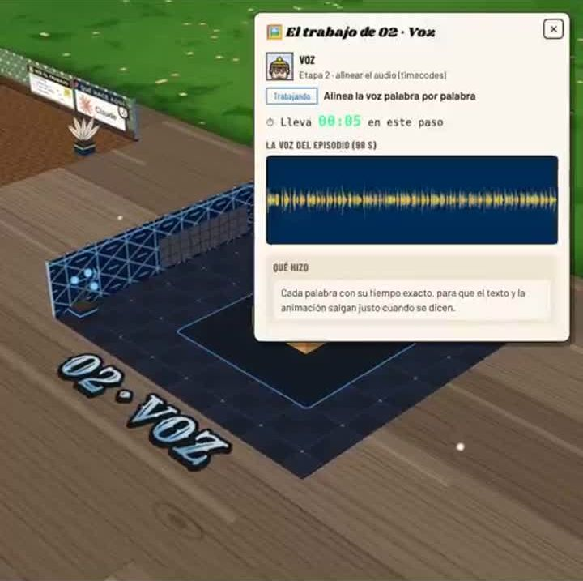
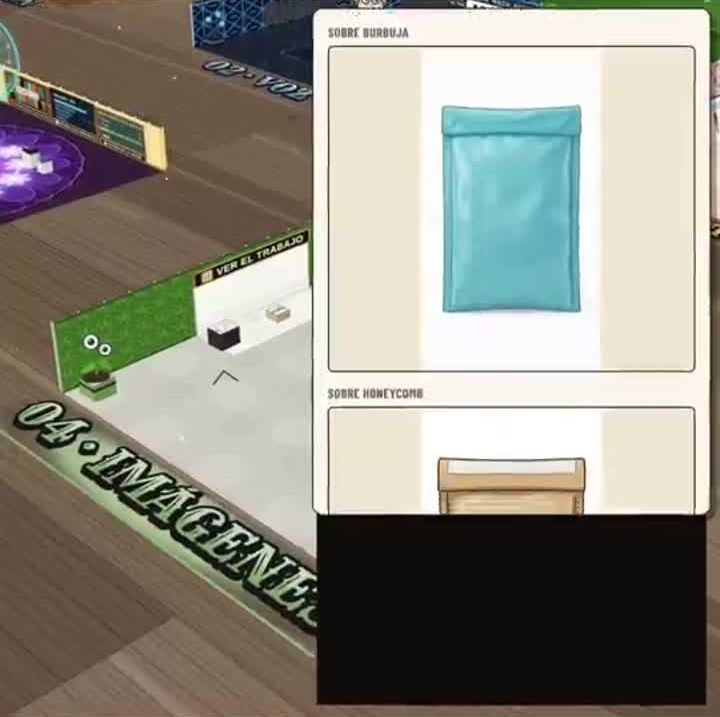
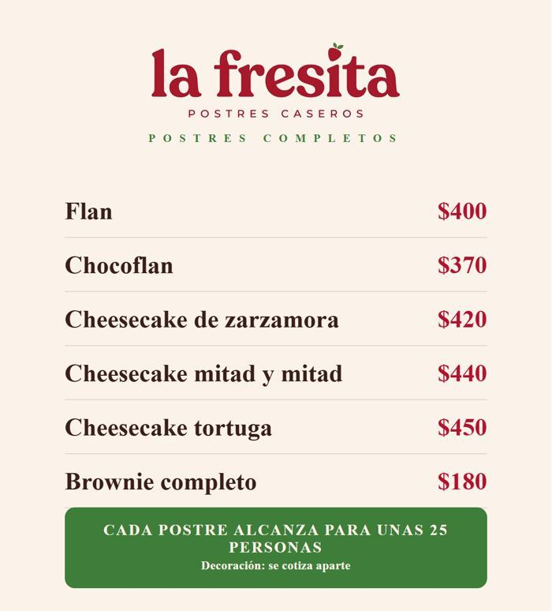
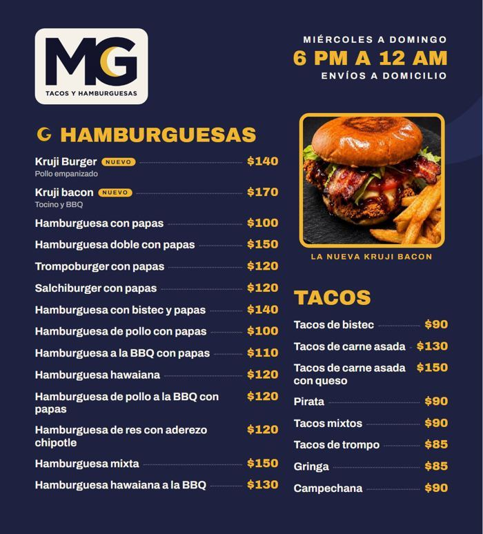
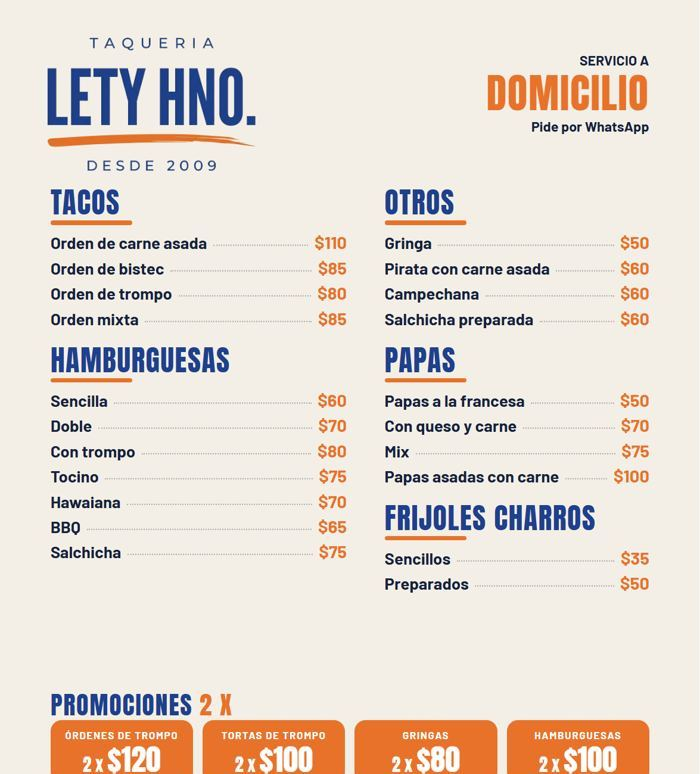

¿Dónde vive cada agente? ¿Tiene varios ecosistemas?
Sí. Un agente no es un programa en un solo lugar: sus instrucciones viven en la carpeta (su AGENTE.md), trabaja dentro de un chat o de una tarea programada en la nube, usa herramientas en otros sitios (Chrome, Flow, GitHub) y reporta en la oficina. La mayoría toca 3 a 5 ecosistemas.
| Agente | Piso | Dónde trabaja | Ecosistemas que toca | Huella al 3-nov |
|---|
Fuente: base de la oficina (agentes, bitácora) y tareas programadas, leídas el 3-nov-2026 10:40. «Huella» = la última vez que dejó algo verificable.


¿Dónde más podría vivir el sistema? ¿Cuál es más económico y eficiente?
Hoy todo corre con una suscripción fija de Claude. La pregunta es si conviene pagar por uso (API), mover piezas a un servidor o usar un orquestador. Con el volumen medido, la suscripción gana por mucho.
| Opción | Cómo sería | Costo al mes | Corre sin la laptop | Veredicto |
|---|---|---|---|---|
| A · Hoy | Suscripción Claude (plan Max) + laptop + Chrome + Flow | $3,300 MXN fijos | No (Chrome y laptop prendidos) | La más barata hoy |
| B · A + servidor chico | Lo mismo, y las tareas que no necesitan sesión de Facebook pasan a un servidor de ~€5 | + ~$110 MXN | En parte | Siguiente paso al tener 3 clientes |
| C · API pago por uso | Agentes con el SDK de Claude, cobrados por token | ver calculadora | Sí | 5 a 10 veces más caro a este volumen |
| D · Orquestador (n8n) | n8n en servidor propio dispara pasos fijos (publicar, medir) con modelos baratos | €0–20 + API | Sí | Sólo para tareas repetidas |
| E · Conexiones gratis | Gemini, ChatGPT, NotebookLM para tareas puntuales (oír un video, segunda opinión) | $0 | — | Complemento, no reemplazo |
Calculadora · suscripción contra pago por uso
Ritmo medido: 269 M tokens en 12 días ≈ 650 M al mes. Supuestos (estimado): 80 % del uso es releer la plática (caché), 12 % escritura de caché, 5 % entrada, 3 % salida; precios publicados de Opus 5.5 ($4/$20, caché $0.20) y Sonnet 5.5 ($2/$10, caché $0.20) por millón; $18 MXN por dólar.
Por qué la suscripción gana
- El 70 % del gasto es releer la plática; en API eso se cobra, en la suscripción no.
- El límite real no es dinero: es el tope de uso. Por eso OLLIN mide pasos y cambia de chat con una regla con número (pasos × pasos que faltan ≤ 6,000; tope 150).
- La debilidad de A no es el costo: es que depende de la laptop y del Chrome. El 3-nov dos tareas se atoraron por eso. B la resuelve en parte por ~$110 MXN.
- API (C) conviene sólo cuando cada cliente pague su propio uso, o para un paso pequeño con un modelo barato.
¿Cómo se auditan los agentes?
Regla de oro: «terminó bien» no prueba nada; la prueba es la huella. Una tarea puede decir que terminó en 4 segundos y haber trabajado, o decir que terminó y no haber dejado nada (falla silenciosa).
Huella
¿Cambió su estado en la oficina, dejó línea en la bitácora, un archivo o un pendiente? Si corrió y no dejó nada: falla silenciosa.
Su métrica
Cada agente tiene una meta con número (ej. DIFUSIÓN: lo del calendario sale el día que toca, 10 de 10). Se grafica cada viernes.
Errores sembrados
Se le meten errores a propósito al REVISOR; debe atrapar 9 de 10.
4 preguntas cada miércoles
¿Cumplió su meta? ¿Dónde gastó de más? ¿Qué hizo a mano que podría ser automático? ¿Qué error repitió? (INVESTIGADOR DE MEJORAS)
Gasto por sesión
Cada chat mide sus tokens al cerrar; el ANALISTA los grafica a las 17:41 y propone la forma más barata.
Auditoría completa
Cada semana o dos: todos los agentes contra lo acordado, con evidencia, arreglo y dueño. La de hoy, abajo.
Resultado de la auditoría del 3-nov
| Qué | Estado | Evidencia |
|---|---|---|
| 7 tareas programadas | Todas dejan huella | Bitácora y archivos de hoy (DIFUSIÓN 9:25, SUPERVISOR 9:44, ANALISTA 8:50) |
| Chrome conectado | Falla | DIFUSIÓN y SUPERVISOR atorados el 30-oct y el 3-nov; se perdió una lectura de 48 h |
| VERIFICADOR | Quieto desde el 20-oct | Salieron 14 anuncios y 3 menús sin su revisión |
| Documentación visible | Sin dueño | OLLIN · Documentación sin cambios desde el 18-oct; la de Lingo desde el 30-sep |
| Alertas de gasto | Ruido | Se repetían 3 alertas ya resueltas; cerradas el 3-nov |
| Gasto por episodio | Incompleto | PL-017 a PL-020 sin medir; el nombre del episodio se escribe de 11 formas |
| Respaldo GitHub y bóvedas | Al día | 8 subidas en 6 días; bóvedas de Lingo y Contenido actualizadas hoy |
¿Cómo se calcula su ROI?
ROI = (ingreso − costo) ÷ costo. Costo = herramientas ($1,800 Claude + $1,500 Google al mes) + anuncios. Ingreso = lo cobrado (anticipos y liquidaciones del Registro). Se cuenta el costo completo aunque las herramientas sirvan a otros proyectos: es el supuesto más estricto.
Calculadora · Contenido para negocios
Hoy: 0 vendidos, anuncio pausado ($32 gastados, 104 visitas al perfil, 0 mensajes). El punto de equilibrio con $600 es 5.5 paquetes al mes.
Gasto medido por día
¿Quién gastó?
Lingo es el que más gasta: el episodio PL-021 costó ≈ 112 M en 9 rondas hasta el sí. 8 sesiones quedaron sin medir.
ROI de Lingo (caso de empresa)
Aquí no hay venta directa: el retorno es tiempo de producción ahorrado y alcance. Fórmula: (horas que costaría hacerlo a mano − horas con OLLIN) × costo por hora, contra la parte del costo fijo que usa. Hoy el dato de horas es hueco; se empieza a medir por episodio.
9 de cada 10 vistas vienen de gente que no sigue la cuenta. PL-019 (10 %) es el peor: el aprendizaje ya está en la propuesta para PL-020.
Lo que el ROI todavía no mide
- Horas de Gael por cliente y por episodio (hueco).
- Margen por paquete: tokens + Flow + impresión + horas (aprobado medirlo; hueco).
- Costo por cliente conseguido: cuánto anuncio cuesta una venta (falta la primera venta).
- ROI de la oficina como producto vendible (falta el primer comprador).
¿Cómo se vende?
Tres productos salen del mismo sistema. Cada uno usa el anterior como prueba.
1 · Contenido para negocios
Paquete de contenido de su negocio real en 7 días: $600 (mitad al empezar, mitad al entregar); marca $350; piezas sueltas. Se vende en persona con el menú del negocio impreso de regalo.



Muestras hechas con sus menús reales para visitarlos (3-nov).
2 · Área de marketing operada
Para una PyME: Gael opera su oficina de agentes (contenido, publicación, medición, documentación). La prueba es Packaging Lingo: un episodio de video por día de trabajo, medido episodio por episodio. Precio: por definir con la primera empresa (referencia: lo que hoy le cuesta su área de marketing).
3 · Oficina estándar (kit)
Una carpeta que cualquiera mete a su Proyecto de Claude y se adapta a su negocio. Sirve para atraer gente con la serie de reels de la oficina («comenta OFICINA») y llevarla a 1 y 2.
El argumento para quien invierte
- Costo fijo bajo y conocido: $3,300 MXN al mes mueven 25 agentes en dos empresas.
- Medido desde el día uno: gasto por sesión, métrica por agente, auditoría con evidencia, ROI con huecos declarados.
- Mercado: las PyMEs de México apenas empiezan a usar IA; un negocio de colonia no puede pagar un área de marketing, pero sí $600.
- Lo que falta (y es lo que compra la inversión): las primeras ventas. El sistema produce; falta el canal que convierta.
¿Cuál conviene más?
Recomendación
- Dónde vive: quedarse en A (suscripción) y arreglar lo que falla (Chrome conectado). Pasar a B con 3 clientes pagados. No pasar a API por ahora.
- Qué vender primero: Contenido para negocios, en persona. Es lo más rápido para tener ingreso y es la prueba que pide un inversionista.
- Qué vender después: el área de marketing operada (mayor ticket), usando Lingo y los primeros clientes como caso.
- El kit, como imán para atraer gente, no como fuente de ingreso al inicio.
¿Cómo se relacionan Contenido, Lingo y la oficina?
La oficina es el sistema; los dos pisos son dos laboratorios distintos que lo prueban.
Contenido
Cliente: negocios chicos. Mide si se vende: mensajes, cotizaciones, anticipos. Usa el método de video de Lingo para sus videos educativos.
Lingo
Cliente exigente (la empresa donde trabaja Gael). Mide si la calidad alcanza: vistas, % visto, rondas hasta el sí. Sólo se usa lo público.
La oficina
Une a los dos: un chat por piso, reglas comunes, un ANALISTA que lee los dos pisos y una auditoría para todos.
¿Para qué sirve la documentación: a Claude y a Gael?
Para Claude: memoria para trabajar
- Cada chat empieza sin memoria: el arranque y la ruta le dicen qué es, qué sigue y qué no tocar.
- Evita repetir errores (errores que se vuelven regla) y volver a preguntar lo que ya se decidió.
- Ahorra tokens: leer lo justo, con topes de tamaño.
- Permite cambiar de chat sin perder nada.
- Forma: texto corto, una sola verdad por tema, siempre al día.
Para Gael: ver, decidir y vender
- Ver dónde está cada cosa y si avanza, sin leer chats.
- Decidir con números: ROI, gasto, métricas por agente.
- Explicar y vender el sistema: diagramas, tableros y este documento.
- Forma: visual, de lo general a lo específico, palabras clave.
Riesgos y lo que falta
| Riesgo | Qué tan grave | Qué se hace |
|---|---|---|
| 0 ventas hasta hoy | Alto | Plan de 2 semanas: 8 negocios visitados con su menú de regalo; meta: 1 anticipo antes del 17-nov |
| Depende de la laptop y el Chrome | Medio | Chrome abierto antes de las 9:40; servidor chico (opción B) con 3 clientes |
| Un solo operador | Medio | Todo documentado y respaldado en GitHub; el kit estándar es el camino para que otro lo opere |
| Calidad que se ve «hecha con IA» | Medio | Desde el 29-oct: sólo negocios y comida reales; VERIFICADOR antes de cada entrega |
| Tope de uso de Claude | Controlado | Regla de cambio de chat con número y medición diaria |